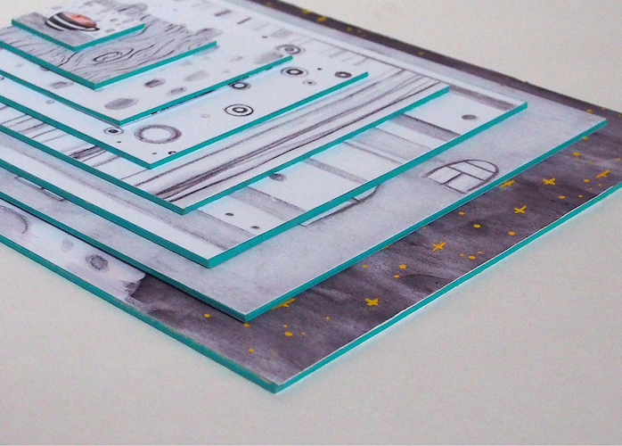
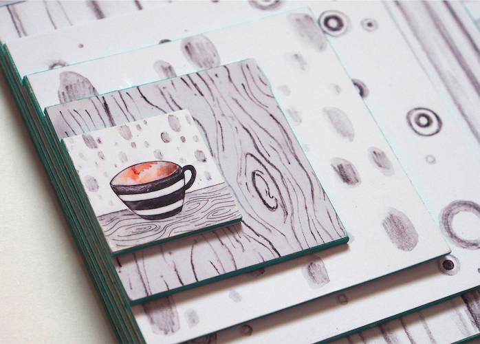
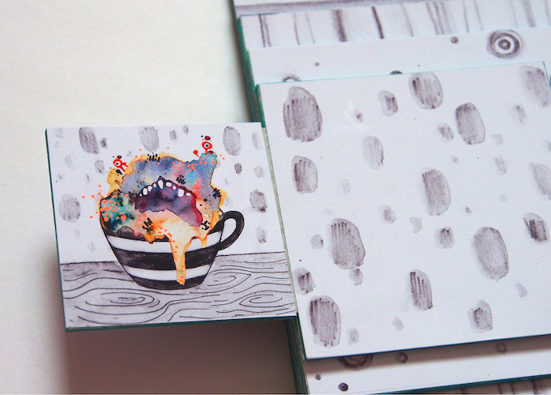
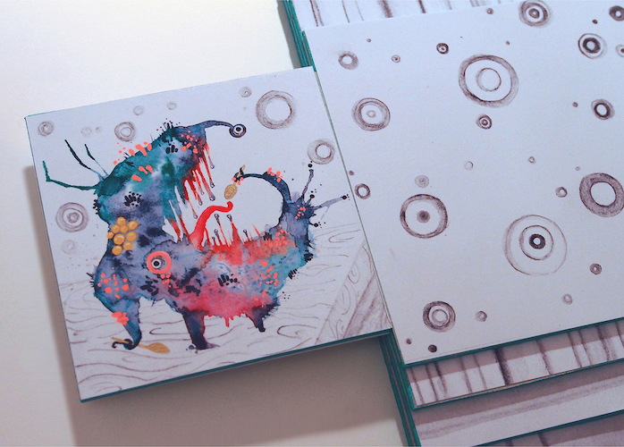
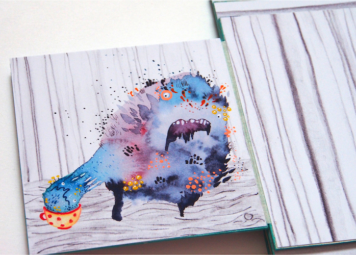
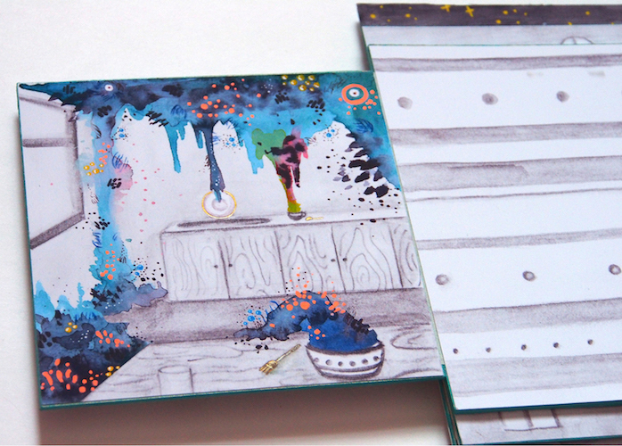
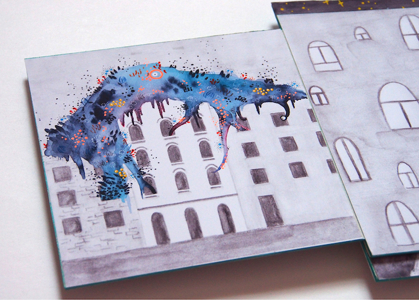
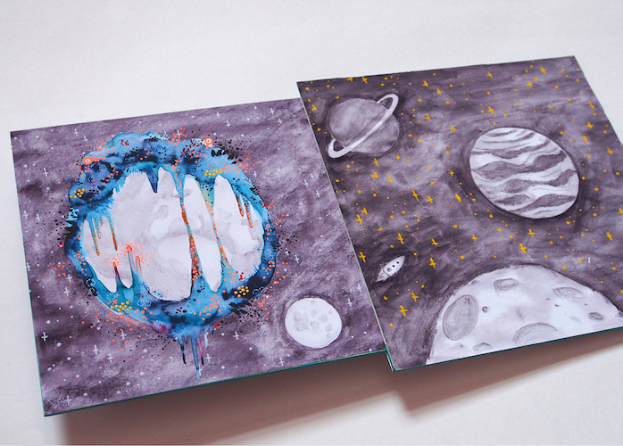

Editorila Design: Tartare Steppe
The Tartar Steppe, a book by
Dino Buzatti, is a reflection on
how great expectations turn into
nothing but disappointment when
there is lack of action and
initiative. The design of the
book plays with the concept of
deceived expectations: the pages
are blank. The text is hidden
inside uncut pages, which
applies that active effort is
necessary to achieve something
of value.
Rotis font family that
includes sans-serif, semi-
serif and serif fonts was
chosen for the book. The font
subtly progresses from simple
and minimal (sans) to more
detailed and complex (serif)
in each spread of the book, symbolising expectations building up.







